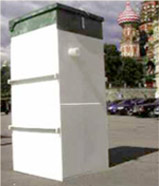

ЮНИЛОС — АВТОНОМНАЯ КАНАЛИЗАЦИЯ ГЛУБОКОЙ БИОЛОГИЧЕСКОЙ ОЧИСТКИ СТОЧНЫХ ВОД
Каждое мгновение в мире производятся неисчислимые объемы мусора и канализационных стоков. Только представьте, сколько раз в неделю вы пользуетесь ванной, туалетом, стиральной машиной… И куда все это уходит?
Если в городе все стоки отправляются прямиком в центральную канализацию, и дальше уже находятся не на вашей совести, то на даче и в загородном коттедже вы отвечаете за судьбу таких отходов от начала и до конца. Спасти себя и свой загородный участок от непрекращающегося загрязнения помогут автономные канализации. А выбрать такую канализацию, возможно, поможет информация о септике ЮНИЛОС- одном из оптимальных способов очистки бытовых стоков на данный момент.
Автономная канализация ЮНИЛОС: два типа очистки в одном септике
Собственно, на данный момент существует три технологии, по которым производится очистка в автономных канализациях: механическая, химическая и биологическая. Химическая очистка – самая небезопасная, ведь применение любых реактивов для очистки воды не проходит бесследно. Эта технология не применяется в септике Юнилос в отличие от двух других – механической и биологической. Сочетание этих типов очистки стоков позволяет добиться максимальной эффективности при сохранении экологической безопасности.
Как устроен ЮНИЛОС септик
Корпус станции Юнилос делится на несколько блоков. Сначала бытовые стоки попадают в первичный отстойник – это механическая очистка, то есть устранение из воды механических примесей, взвесей. В течение некоторого времени стоки остаются здесь, пока наиболее тяжелые частицы не осядут на дно.
Второй этап очистки стоков в септике ЮНИЛОС - биологическая очистка. Станции данного типа применяют не аэробную (как большинство распространенных септиков), а анаэробную технологию биологического разложения органических примесей, поэтому электричество для работы практически не требуется. Если в аэробных септиках необходима постоянная вентиляция и поддержание определенной температуры, то здесь такой проблемы просто не существует.
На этом этапе органические загрязнители переходят из растворимой в воде формы в нерастворимую, поэтому в дальнейшем их несложно удалить с помощью насоса или специального фильтра.
Третьим и последним этапом очистки с -98% очищенная вода, которая соответствует нормам качества сбрасываемых в окружающую среду стоков.